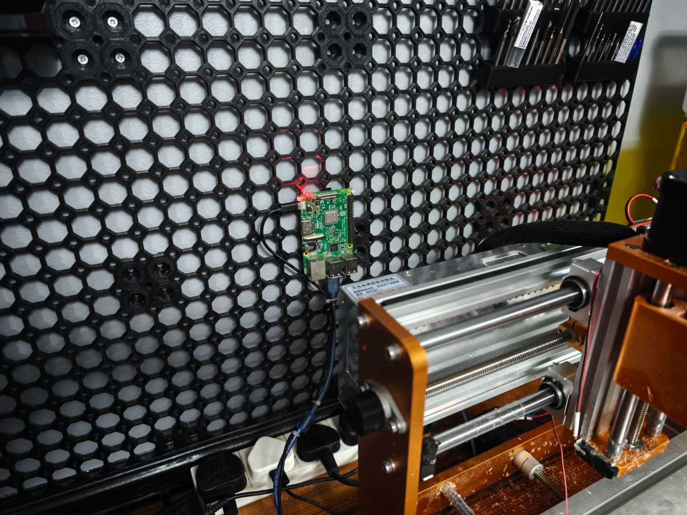
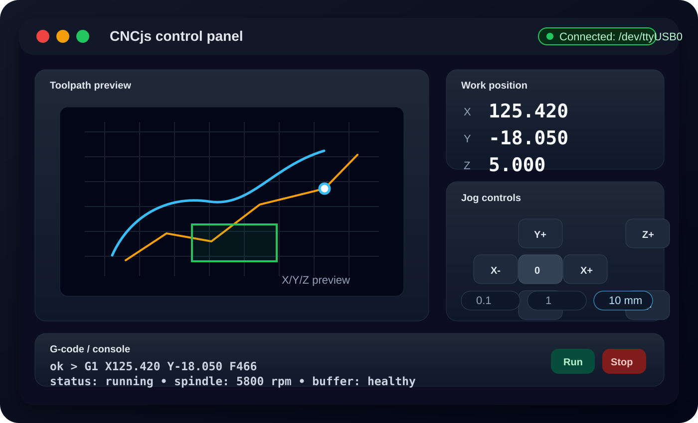
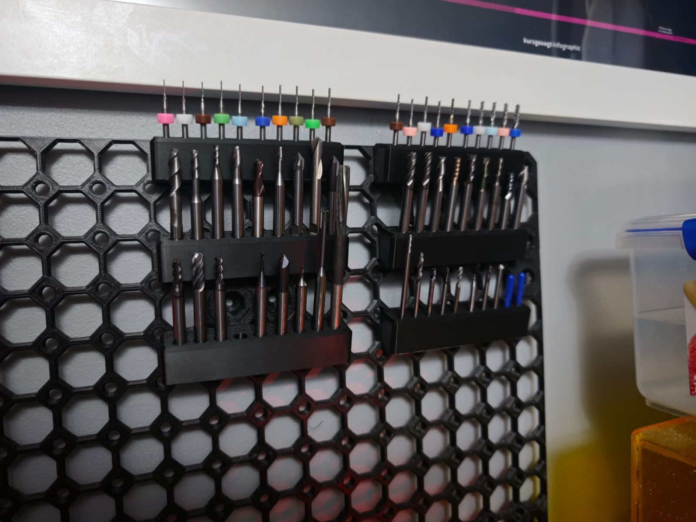
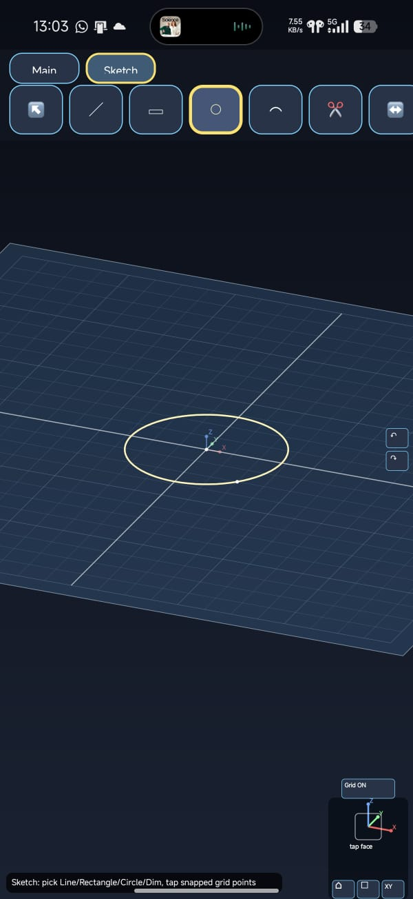

CNC control with CNCjs, tool holders, and portable CAD
Even though I planned to get stuck into some electronics projects, I got immediately sidetracked. No surprise there.
The first problem was how awkward the CNC workflow was. I do all my CAD and CAM work on my main PC, but the CNC was being controlled by a USB cable connected to my laptop. That meant exporting the G-code from the PC, copying it over to the laptop, and then running it from there. It worked, but it felt like a clunky extra step every single time.
Naturally, I thought there had to be a way to make something closer to a proper CNC control panel, like you get on commercial machines. A quick chat with Hermes Agent gave me a few options, and the strongest one for my setup looked like CNCjs.
Turning a spare Raspberry Pi into a CNC controller
I have so many spare Raspberry Pis and Arduinos that I didn’t need to buy anything for this. I used my lowest-spec Raspberry Pi 3 B, running the 32-bit Raspberry Pi OS Lite image with no GUI. That massively reduced the amount of resources being consumed while the Pi is just sitting there idle.
I loaded CNCjs onto the Pi and set it up to launch automatically as a service whenever the Pi boots. I do have a small 5-inch touchscreen that I can connect if I want a GUI directly on the Pi, but I don’t really want to make it sluggish. Its actual job is to send G-code reliably, so keeping it lightweight makes sense.

I managed to attach it to my multiboard wall and put it behind the machine so it’s out of the way. With the USB cable attached to the Pi and the Wi-Fi configured, I can now access the CNCjs interface remotely and control the machine from any computer on the network.

That means I can export the G-code on my more powerful PC and run it straight from there, instead of constantly moving files around. It is a much cleaner workflow, and the interface is pretty fancy too.
Tool holders
A friend gave me some old tooling because he doesn’t machine anymore and didn’t need it. I’m very happy to have it, but I’m also conscious that keeping cutters stored badly is not going to help tool life.
I also want the tools in a proper order so I can set them up in Fusion 360 numerically, then number the physical tools for quick access. It should make setup much easier once I have a consistent system.

Someone online had posted a holder design with the FreeCAD files included. I hadn’t really used FreeCAD before, but it was relatively intuitive. That let me edit the design for the diameter of my tooling, because the original options were not quite right for what I needed. They had 3 mm holders and then 3–12 mm holders, whereas I mostly needed 3 mm and 6 mm.
I’m happy with the holders. They fit great on the multiboard wall, and I’m trying not to put absolutely everything I own on there. The plan is to keep only the stuff I need quick access to around the machines. This is the start of that, so the rest of the wall is still pretty empty at the moment.
CADroid: portable CAD
This is a bigger project, but it is something I actually need.
The current options for making 3D models on mobile are quite costly. I can remote into my PC and use SOLIDWORKS or Fusion 360, but it is painful. I lack proper rotation control, the buttons are tiny, and it is just not a nice way to get anything done.
So although I could keep working around it, I want something easier for designing parts on the go when I get a random idea. I’m developing a new CAD app and calling it CADroid.

At the moment the app is still very basic functionally. I’m focusing on locking down the geometrical constraints for 2D sketching before adding any 3D features. So far, I have:
- a 3D environment;
- the ability to move, zoom, and rotate;
- sketch planes for XY, YZ, and XZ;
- tools for lines, circles, and rectangles;
- the beginning of horizontal and vertical dimension constraints.
That last part still needs work. Constraints are proving to be quite a difficult task, which is not exactly shocking, but it is definitely one of the core things that needs to feel right.
I’m happy with the look of it at the moment. A lot is still placeholder, and I need to clean up the icons, toolbar, and landscape orientation. After that, the main focus is fixing the constraint system.
On 18 June 2026, I estimated that it might take about two to three months of development before I had a version 1 prototype ready. That was a dated estimate, not a promised release date. I want to get it properly working before putting it out there, because I want feedback on the actual workflow of the app rather than just a hoard of bug reports.
The goal is simple: make it quick and easy to model a part on the fly.
Stay tuned!